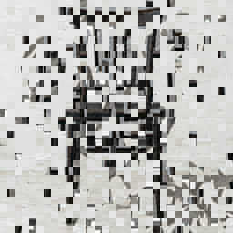

DIJP / 0.7
Dual-Interpretation JPEG
One JPEG file. A standard decoder displays M. A dedicated decoder reveals A, M, and B from the same entropy stream.

LOADING
LOADING JPEG
DIJP / 0.7
One JPEG file. A standard decoder displays M. A dedicated decoder reveals A, M, and B from the same entropy stream.

LOADING
LOADING JPEG